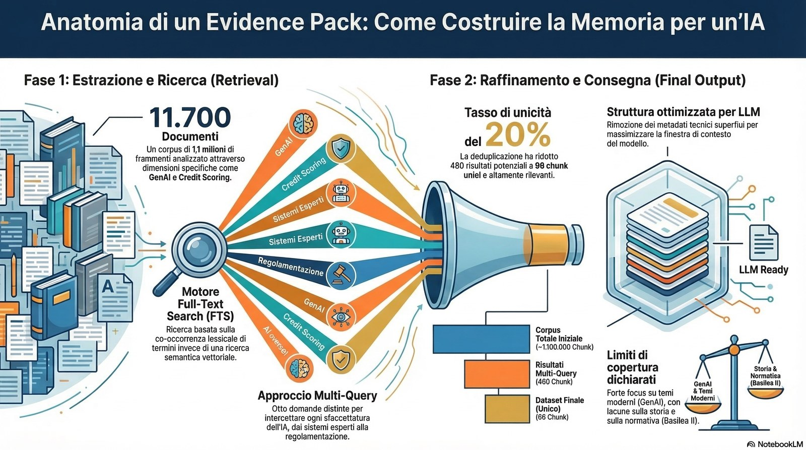

La nascita dell’uso dell’intelligenza artificiale in banca: dietro le quinte
Paolo Volterra ![]()

Executive Summary
Il file
evidence_merged.jsonè un aggregato di 96 chunk testuali unici estratti da un corpus di ~11.700 documenti Zotero (~1,1 milioni di chunk totali).La costruzione ha seguito un approccio multi-query: otto domande tematiche distinte, ciascuna finalizzata a intercettare una diversa sfaccettatura del tema “intelligenza artificiale in banca”.
Il motore di recupero è un Full-Text Search (FTS) basato su co-occorrenze di termini, non su embedding vettoriali. Questo introduce limiti ben precisi di copertura semantica.
Il file è stato progettato per essere consumato da un LLM: struttura semplificata, metadati tecnici rimossi, query di provenienza conservata per orientare il modello.
La copertura tematica è disomogenea: i temi più recenti (GenAI, compliance, ML nel credito) sono meglio rappresentati; la storia dei sistemi esperti degli anni Ottanta e l’evoluzione regolamentare (Basilea II, AI Act) risultano scarsamente coperti dal corpus.
Il metodo: otto query, otto angolazioni
Il tema generale — “AI in banca” — è troppo ampio per una singola query. Un’unica ricerca su “artificial intelligence banking” avrebbe recuperato chunk tematicamente vari ma probabilmente dominati dai contributi più frequenti nel corpus, oscurando argomenti più specifici ma ugualmente rilevanti.
La soluzione adottata è stata scomporre il tema in otto sotto-domande distinte, ciascuna corrispondente a una dimensione del fenomeno:
Le origini storiche dell’AI in banca
Il machine learning applicato al credit scoring e ai prestiti
Le reti neurali per il rilevamento delle frodi
I robo-advisor, il trading algoritmico e l’automazione
Il natural language processing e i chatbot nel customer service
I sistemi esperti degli anni Ottanta e la prima digitalizzazione
I Large Language Model e l’adozione di AI generativa
La regolamentazione e la supervisione dell’AI da parte delle autorità finanziarie
Ogni query è stata formulata in inglese — la lingua dominante nel corpus scientifico — con termini chiave multipli, progettati per massimizzare le co-occorrenze nei testi pertinenti. Si tratta di una scelta pragmatica: il motore FTS non ragiona per concetti ma per parole, e formulare la query in modo ricco di termini specifici aumenta la probabilità di intercettare i chunk più rilevanti.
Questa scelta introduce però una prima assunzione implicita: che i temi rilevanti siano rappresentati nel corpus con la terminologia anglofona standard. Documenti in italiano, in tedesco o scritti con terminologia non convenzionale potrebbero sfuggire, anche se tematicamente centrali.
Il motore di recupero: FTS su DuckDB
Lo script utilizzato — memoria_query_rank.py — esegue una ricerca full-text su DuckDB. Il meccanismo sottostante è un ranking basato su occorrenze: la query viene scomposta in termini singoli, e ogni chunk nel corpus riceve un punteggio proporzionale a quante parole chiave contiene e con quale frequenza.
Questo è un approccio lessicale, non semantico. Non capisce che “credit risk assessment” e “valutazione del merito creditizio” significano la stessa cosa. Non sa che “FICO score” è un tipo di credit scoring. Recupera ciò che somiglia formalmente alla query, non ciò che è concettualmente vicino.
Per ogni query sono stati recuperati fino a 400 candidati iniziali, poi ridotti ai 60 migliori in base al punteggio FTS (parametro final_k=60). Il risultato intermedio di ciascuna query è stato salvato in un file JSON separato, con metadati completi: identificativo univoco del documento (doc_id), identificativo del chunk (chunk_uid), punteggio, flag di anomalia, e testo grezzo.
È importante notare che i punteggi FTS non sono comparabili tra query diverse: un punteggio di 92 nella query sui LLM non equivale necessariamente a un punteggio di 50 nella query sul credit scoring. Il ranking è interno a ciascuna query, non assoluto.
Il merging e la deduplicazione
Unendo otto file da 60 chunk ciascuno, il totale teorico sarebbe di 480 record. Nella pratica, molti chunk vengono recuperati da più query: un testo sull’automazione del credito può comparire sia nella query sul machine learning che in quella sui robo-advisor; un documento sulla governance dell’AI può intercettarsi sia nella query sui LLM che in quella sulla regolamentazione.
La fase di merge ha eliminato i duplicati sulla base del chunk_uid, l’identificatore univoco che combina documento e posizione del chunk all’interno del documento. Il risultato è 96 chunk unici su 480 potenziali — circa il 20%.
Questo dato merita una lettura attenta. Non significa che il 80% dei chunk fosse spazzatura: significa che il corpus ha una struttura di co-occorrenza relativamente concentrata. I documenti più rilevanti tendono ad essere intercettati da più query, il che è coerente con il fatto che i paper più importanti del campo trattano più dimensioni contemporaneamente. La deduplicazione mantiene solo la prima occorrenza del chunk, conservando la query che lo ha generato come metadato.
Come interpretazione — e va dichiarata come tale — un tasso di unicità del 20% suggerisce che il corpus ha una copertura discreta del tema nei suoi aspetti contemporanei (dove più query convergono sugli stessi documenti rilevanti), ma potrebbe essere lacunoso sugli aspetti storici e normativi (dove la convergenza è bassa non perché i documenti siano irrilevanti, ma perché non ci sono abbastanza documenti da intercettare).
La struttura del file per l’LLM
Il file evidence_merged.json ha una struttura deliberatamente più leggera rispetto ai file sorgente. Ogni record contiene quattro campi:
id— il rango del chunk all’interno della query originale (E1, E2, …)file— la chiave Zotero del PDF di originescore— il punteggio FTS assegnato dal motore di recuperoquery— la query che ha prodotto quel chunktext— il testo grezzo del chunk
Sono stati rimossi doc_id, chunk_uid e i flag di anomalia. Questi metadati servono all’infrastruttura — permettono di risalire al documento originale, di aggregare chunk dello stesso testo, di filtrare chunk malformati — ma non aggiungono valore a un modello linguistico che deve leggere e ragionare sul contenuto. Mantenerli avrebbe appesantito il contesto senza beneficio.
Il testo dei chunk è grezzo, così come estratto dalla pipeline di processing dei PDF (Docling) o da Zotero stesso: punteggiatura compressa, spazi multipli, caratteri residui dalla conversione ottica. Questo è un fatto, non una scelta intenzionale: la qualità del testo dipende dalla qualità originale del PDF e dalla pipeline di conversione, e non è stata post-processata.
Una assunzione implicita nella costruzione del file è che il modello LLM destinatario sia sufficientemente robusto da leggere testo rumoroso senza perdere il filo del ragionamento. Questa assunzione è ragionevole per i modelli attuali di grandi dimensioni, ma potrebbe non valere per modelli più piccoli o specializzati.
Limiti dell’analisi
Limiti del motore di recupero. L’FTS lessicale non cattura sinonimi, parafrasi, o concetti espressi in lingue diverse dall’inglese. La scelta di usare memoria_query_rank.py invece della versione vettoriale (memoria_query_rank_v3.py, con FAISS e cross-encoder) dipende dalla maturità dell’infrastruttura: la tabella faiss_map_v3 non è ancora disponibile. Il retrieval vettoriale probabilmente avrebbe prodotto una selezione semanticamente più precisa, con meno rumore nei chunk a basso punteggio.
Limiti di copertura del corpus. Il corpus non è stato costruito per rispondere a questa domanda specifica. Le sezioni tematiche più deboli — sistemi esperti degli anni Ottanta, storia della digitalizzazione bancaria in Europa, evoluzione di Basilea II rispetto all’AI — non sono lacune del retrieval, ma lacune del corpus. Questo significa che per quelle sezioni il documento finale (ia_in_banca.md) ha dovuto fare affidamento sulla conoscenza interna del modello, senza supporto documentale verificabile. È una fragilità dichiarata, non nascosta.
Limiti della deduplicazione. La deduplicazione per chunk_uid rimuove i duplicati esatti, ma non i near-duplicates: chunk che provengono da documenti diversi ma con contenuto quasi identico (es. due versioni di uno stesso working paper, o un paper e la sua preprint) restano entrambi nel file. Non è un problema grave per 96 chunk, ma lo diventerebbe su volumi maggiori.
Assenza di un ranking globale. I 96 chunk del file merged non sono ordinati per rilevanza complessiva. Il punteggio conservato è quello relativo alla query di provenienza, non un punteggio normalizzato sull’intera raccolta. Un LLM che legge il file in sequenza può ricevere chunk di qualità molto diversa in ordine casuale.
Criticità residue e vulnerabilità aperte
La criticità più rilevante riguarda la tracciabilità delle fonti. Il file conserva il nome del PDF (file), ma non il titolo, l’autore o l’anno del documento. Per costruire citazioni verificabili è necessario risalire alla chiave Zotero e interrogare il database bibliografico separatamente. Questo passaggio non è automatizzato: richiede un’operazione manuale o uno script aggiuntivo. L’evidenza nel documento finale è pertanto citata in modo parziale, e la piena verificabilità resta un lavoro da completare.
Una seconda vulnerabilità riguarda il rumore semantico. Alcuni chunk recuperati — soprattutto dalle query su automazione e NLP — provengono da documenti che trattano quei temi in contesti completamente diversi dal settore bancario: reti di comunicazione industriale, marketing digitale, politiche di sviluppo di AI in America Latina. Il motore FTS non distingue il contesto: intercetta le parole chiave indipendentemente dal dominio applicativo. La qualità del filtro dipende interamente dalla formulazione della query e dalla densità del corpus nei temi pertinenti.
Non è possibile quantificare con certezza quanta parte dei 96 chunk sia genuinamente rilevante per il tema bancario senza una revisione manuale sistematica. Una stima ragionevole — basata su una lettura a campione — suggerisce che tra il 60% e il 75% dei chunk contribuisca in modo utile alla risposta. Il resto è rumore residuo tollerabile in un contesto di retrieval assistito, ma che un revisore esterno potrebbe legittimamente contestare.
Il filtro umano come mitigazione praticabile. Va detto, però, che il formato JSON del file merged è pensato anche per questo: è possibile aprirlo, leggere i chunk uno per uno e rimuovere manualmente quelli palesemente fuori tema prima di passare il file a un LLM. Non è un passaggio automatizzato, ma non è nemmeno oneroso su volumi di 96 record. Un filtraggio a occhio di venti minuti può ridurre sensibilmente il rumore semantico e migliorare la qualità della risposta finale del modello. Il formato strutturato facilita questa operazione: ogni chunk porta con sé la query di provenienza e il punteggio, il che orienta rapidamente la selezione.
LLM locale per dati sensibili. Un’ulteriore considerazione riguarda il perimetro di utilizzo del pipeline. Quando i documenti di partenza — o le query stesse — contengono informazioni soggette a vincoli di riservatezza (GDPR, segreto bancario, segreto industriale, dati personali di clienti o controparti), inviare il file a un servizio cloud esterno introduce un rischio di compliance non trascurabile. In questi casi, il pipeline è compatibile con un approccio alternativo: usare un modello linguistico eseguito localmente — ad esempio tramite Ollama o llama.cpp con modelli open weight come Mistral, LLaMA o Qwen — che non trasmette dati all’esterno. La qualità della risposta può essere inferiore rispetto ai modelli frontier, ma il dato rimane dentro il perimetro aziendale. Questa non è un’alternativa teorica: è già praticabile con hardware consumer di fascia media (GPU da 8–16 GB VRAM) e non richiede infrastruttura dedicata per un uso occasionale. La scelta tra cloud e locale dovrebbe essere consapevole e documentata, non lasciata all’abitudine.
Nota: questo documento descrive un processo di costruzione dati reale, non un’analisi di investimento o un’analisi di rischio creditizio. Le “interpretazioni” e le “assunzioni” esplicitate si riferiscono alle scelte metodologiche del pipeline, non a giudizi su entità o fenomeni economici.
Pubblicato in origine su Substack il 14 marzo 2026.